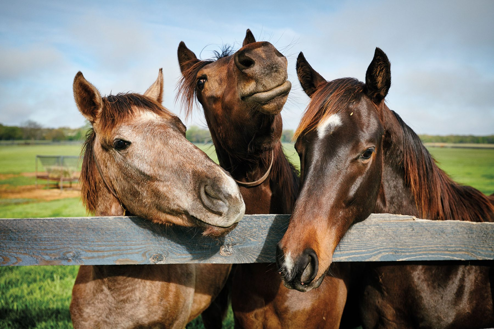
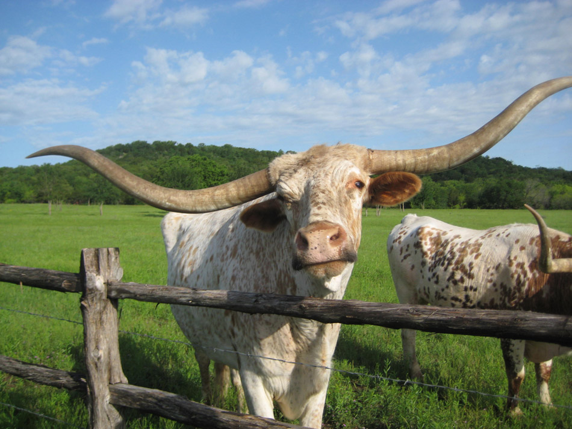

Meet Our Animals

Meet our three horses Henard, Brian and Josh. They are available for rent as well and love to be ridden.
They are also used in other events around the ranch. You could say these three are the stars of the show. Your can't be a real ranch
if you don't have a few horses.

This is our only longhorn on the entire ranch, Sherman. He is such a friendly cow he loves to be around the guests. We used
to have another one named Bertha but Brisket night was a couple weeks ago.

This is our Capybara, Chadwick. He is the only living capybara in the state of Arizona. Due to the dry weather they do not do well in the desert
but fear not, Chadwick spends most of his time at the pool so he has no issue with heat (other than himself).
Other Members of Our Ranch
These are the starts of our show, however there are many other animals that are not in the foreground
that we hold in our stables that are not for commercial use. We offer a housing program where people can pay to store a horse in our stable or even other animals in our pens like chickens, pigs or goats.
Livestock animals aren't used as much in shows because we would perfer not to become great friends with what we will eventually eat. Many of the meat eaten on
our community nights or large meals are raised and prepared all inside of the ranch. If you would like to call you can learn more about this process and maybe
even take part in it.